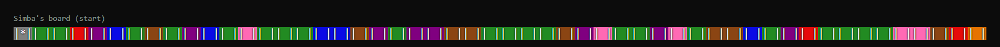
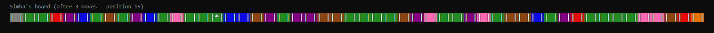

How It Plays
A choice-driven console RPG
- Character Select — Five lion characters (Apollo, Mane, Elsa, Zuri, Roary), loaded in from
characters.txtat runtime, each starting with different Strength, Stamina, and Wisdom. - Two Paths — Cub Training gets you a stat boost and an advisor pick right away, but costs 5,000 Pride Points. Going straight to Pride Lands is the opposite: points now, weaker stats.
- Five Advisors — Rafiki, Nala, Sarabi, Zazu, and Sarafina, each with their own ability. You pick or swap whenever you land on a Pink tile.
- Tile Events — Every color does something real: Blue's a stat bonus plus an extra turn, Brown/Red knock you backward, and Purple throws an actual CS riddle at you from
riddles.txtfor a shot at ±Wisdom. - Leadership → Pride Points — At the finish line, your Strength/Stamina/Wisdom convert into a final Pride Points score. Higher total wins, and it gets logged to
overallGameResults.txt.
Seeing It Run
A real playthrough
Built exactly per the project's own readme.txt (g++ -std=c++17 gamedriver2.cpp Player.cpp Tile.cpp Board.cpp). Character select, path choice, and tile events all pulling from the real data files:
Character Select
~~~~ Welcome to the Circle of Life Game, Lion King Edition ~~~~ Simba: Choose your character by entering the number at the end of your desired characters line. playerName|age|strength|stamina|wisdom|pridePoints Apollo|5|500|500|1000|20000 Mane|8|900|600|600|20000 Elsa|12|900|700|500|20000 Zuri|7|600|500|900|20000 Roary|18|1000|500|500|20000
Tile Events in Action
You rolled a 6 Simba moves to position: 6 Desert storm sweeps through the territory Your Pride Points went from 25000 to 24500. You rolled a 4 Nia moves to position: 4 Oh no! You've stumbled into the Graveyard. Move back 10 tiles, -100 Stamina/Strength/Wisdom. You rolled a 6 Simba moves to position: 20 You've been captured by Hyenas! Dragged back to position 14, -300 Stamina. You rolled a 2 Nia moves to position: 16 Guided by a friendly herd of elephants — Pride Points: 24300 → 25000!
The Actual Board Class


Reflection
Challenges & what I learned
This was a solo project for my data structures course, so everything below is just stuff I ran into and figured out on my own. A few things that stood out:
- Parsing Pipe-Delimited Data — Characters, advisors, riddles, and random events all live in flat text files, parsed at runtime with a hand-written
split()instead of a library. - Branching Game State — The two path choices (Cub Training vs. Pride Lands) mutate a player's stats differently and swap in a different pre-generated board template, so the two playthroughs actually feel distinct from each other.
- Tile Dispatch by Color — Each of the six tile colors routes to its own event function (oasis, counsel, hyena, graveyard, riddle, random), which keeps the event logic out of the main game loop.
- Leadership → Pride Points — Designing a conversion formula that actually rewards a full run's accumulated Strength/Stamina/Wisdom, instead of just tallying up raw points, took more trial and error than I expected.